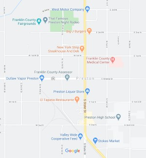

Preston, Idaho

Weather Summary
Currently:
High: °F
Humidity: %
Wind Speed: mph
Wind Chill: °F
5 Day Forecast
Soccer Opening Day
Opening day for our community soccer league will be held on Saturday, February 22, 2020. Please come and participate in cheering for all of the teams this season. We have many teams this year who would love to have a large crowd cheering for them. Our teams have been practicing very hard for the new season and they are excited to use the freshly updated fields. We want to thank all of the community and volunteers for helping our league update the fields. There will be many food vendors to choose from at the field ... continue to full article

Sun or Clouds


123 Main Street
Preston, Idaho
☎123-456-7890
✉ sunorclouds@sunorclouds.com